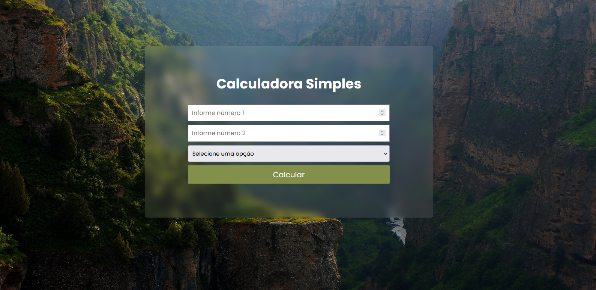
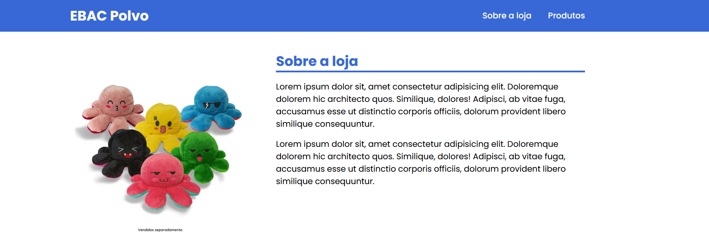
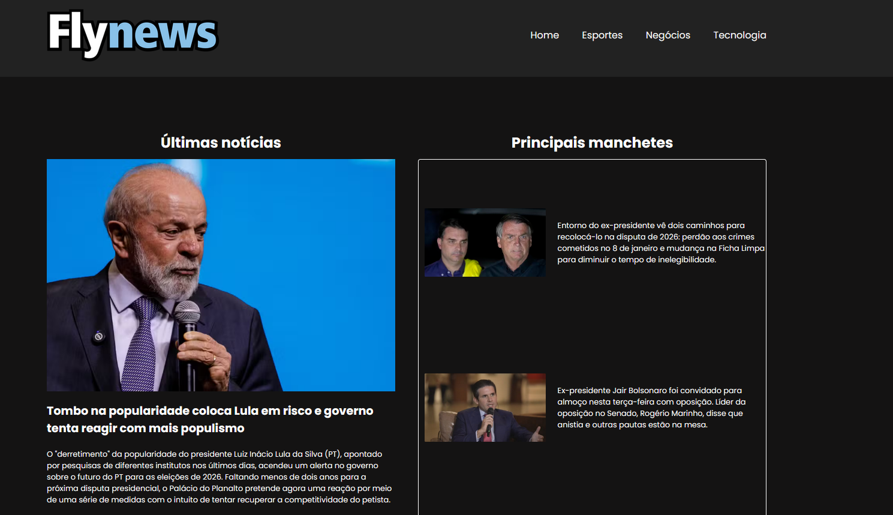
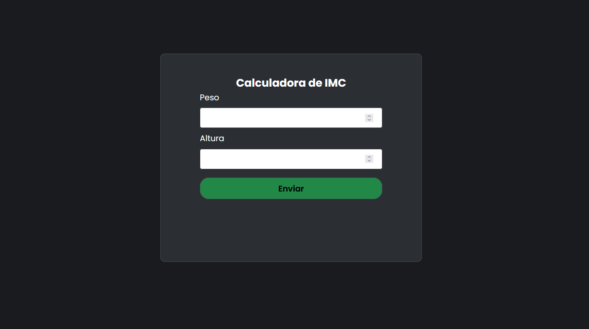

Sobre Mim
Sou Guilherme Dias Ferreira, tenho 18 anos e sou natural de Viradouro. Concluí o Ensino Médio na Etec de Bebedouro, onde também obtive formação técnica em Informática para Internet. Minha paixão por tecnologia e inovação me levou a ingressar no curso de Big Data na Fatec de Bebedouro, onde sigo aprofundando meus conhecimentos. Durante minha trajetória acadêmica, desenvolvi projetos utilizando Arduino e programação orientada a objetos em Java. Tenho grande interesse nas áreas de ciência de dados, automação e novas tecnologias, e estou sempre em busca de novos aprendizados e desafios que contribuam para meu crescimento profissional.
Habilidades
Possuo uma sólida experiência em diversas tecnologias de desenvolvimento, incluindo JavaScript, HTML, CSS, Java e C#. Ao longo da minha trajetória profissional, tive a oportunidade de atuar em projetos de diferentes portes e segmentos, o que me permitiu desenvolver uma visão abrangente sobre o ciclo completo de desenvolvimento de software — desde a concepção da solução até a entrega final. Essa vivência me proporcionou uma compreensão aprofundada sobre como essas linguagens e tecnologias se complementam na construção de aplicações robustas, escaláveis e com excelente desempenho. Tenho especial atenção à experiência do usuário, buscando sempre aliar estética, funcionalidade e usabilidade nas interfaces que desenvolvo.

HTML 5

CSS 3

JavaScript

C Sharp

Java
Projetos

Calculadora
Esse projeto consiste em fazer uma calculadora que realiza as operações matemáticas básicas, como a adição, subtração, multiplicação e divisão. Nele, utilizei HTML, CSS e JavaScript.

Site de vendas
Site de vendas que tem como foco aplicar os conhecimentos de CSS responsivo. Esse site foi baseado na venda de bichos de pelúcia, como polvo do humor.

Portal de Notícia
Website com foco em apresentar as principais notícias da semana. Foi montando utilizando HTML, CSS e JavaScript, com foco em aplicar conhecimentos de css flexível.

Calculadora Imc
Projeto voltado para aplicar conhecimentos básicos de Front-End, treinando principalmente a lógica utilizada na aplicação do JavaScript com o restante da página.